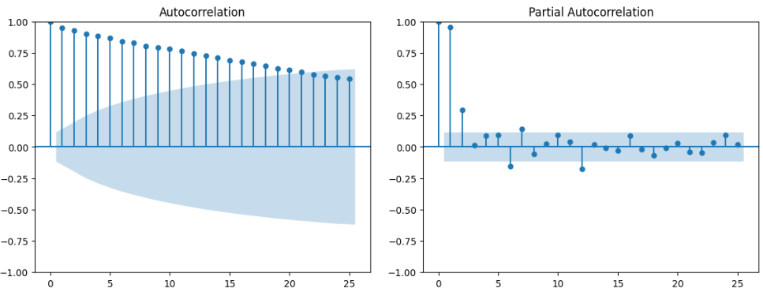
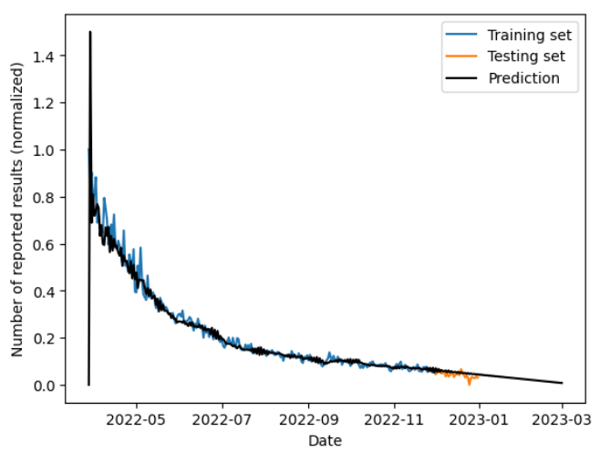
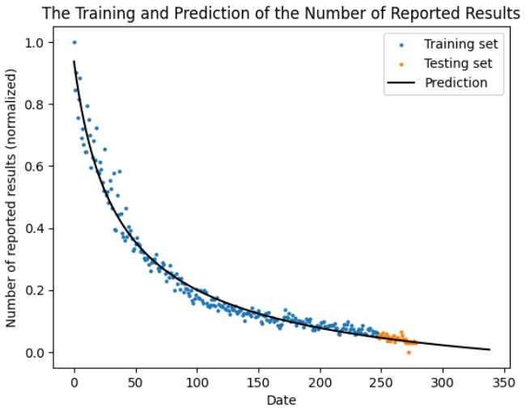
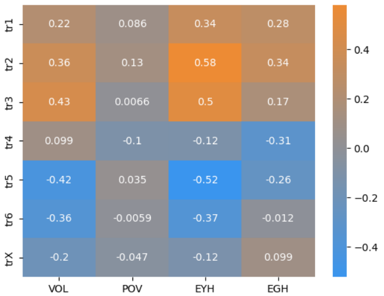
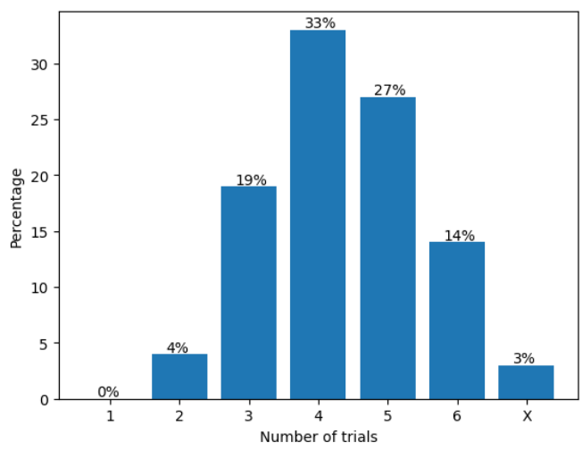
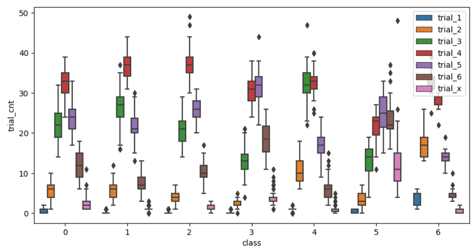

Projects / An Analysis on Wordle Game Based on Machine Learning
An Analysis on Wordle Game Based on Machine Learning
Project information
- Organization: The Mathematical Contest in Modeling (MCM).
- Duration: Feb. 2023.
- Place: New York, U.S.A.
- Programming language: Python.
- Award: Meritorious Winner.
The problems of MCM '23 can be seen on the mirror site here. My group (of three) chose Problem C to work on within the four-day duration of the contest. I was the main programmer, model designer, and report writer of this project. It is great honor that we can be designated as Meritorious Winner. The designation rules can be seen here, and our certificate can be viewed here.
Overview
As Douglas Horton said, cramming complexity into simplicity is the art of intelligence. Wordle, as a brilliant combination of mathematics and computer science, is the best illustration. In this project, we will mainly discuss four basic and highly correlated problems as follows.
Forecasting the number of reported results
We used an ARIMA model for time series analysis, and a nonlinear regression model for curve fitting. The ARIMA model achieved a mean squared error of 2.91×10-3, and the nonlinear regression model achieved approximately 2.00×10-3, which are both within the acceptable range. Furthermore, they led to very similar forecasting results on the number of reported results on the target date Mar 1, 2023. More specifically, one predicted 16756 and the other predicted 16774.
Predicting the distribution of number of trials to guess the word
We proposed several new attributes of the words and performed the Pearson correlation analysis to select the influencing factors. The finally selected attributes are the Variety of Letters (VOL), the Expectation of Yellow Hit (EYH), and the Expectation of Green Hit (EGH). Using these three attributes along with the position information of the letters, we trained a Decision Tree Regression model and a Random Forest Regression model to predict the distribution of the number of trials. The two mutually corroborating models both achieved mean absolute errors of at most 3%, and produced almost identical prediction results on the target word EERIE. It is a Gaussian-like distribution, with the most players using four trials to succeed.
Classifying the difficuly of words
We developed two classification models of word difficulty. The Expectation of Number of Trials model simply treated the number of trials as a random variable, computed its expectation, and selected the quartiles as boundaries. The other model is based on k-Means clustering. The two models almost agreed on the difficulty level of the target word EERIE, which is a little bit over the third quartile if we sort the words in an ascending order of difficulty and overall considered as hard.
Additional patterns
We found that certain combinations of letters tend to produce medium or easy words. Moreover, the aforementioned attributes VOL, EYH, and EGH have certain impacts on the difficulty level of words. Large VOL values generally lead to high difficulty levels, and low EYH and EGH values often correspond to difficult words.
Plots and results
Our technical report is titled The World of Wordle: An Analysis on Wordle Game Based on Machine Learning, which contains almost all the results of our project. There are some other plots and results in the Jupyter Notebooks in our GitHub repository and are not selected to be in the final report, which you can see here. As follows is a deliberately selected plot library of our results.





